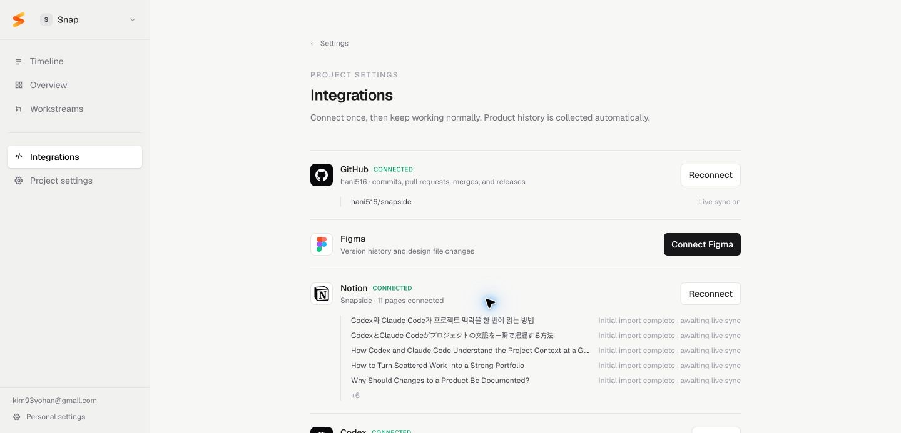
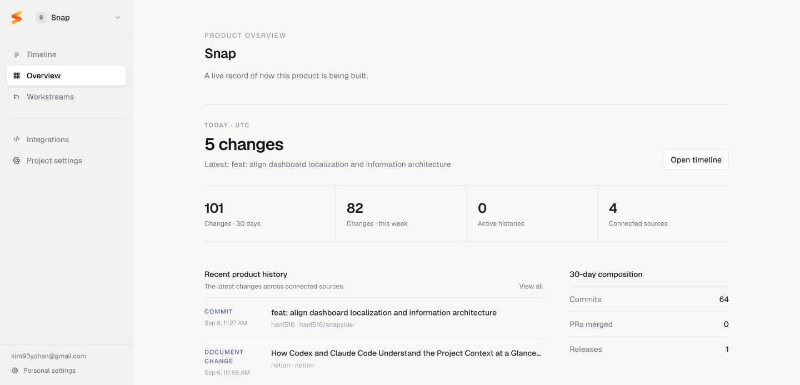
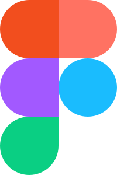

作業ごと・日付ごとに見返す
同じ作業の変更はWorkflowに、日付順の記録はLogにまとめました。

03 / 03 Web app
Snapside
デザイン、コード、文書の変更をまとめるサービスです。画面づくりと開発を一人で担当し、公開後のデータも確認しました。


CONCEPT / プロダクトの背景
FigmaやGitHubなどに残る変更を自動で集め、
何をしたかを後から追えるようにしました。



Figma開発に使ったツール
同じ作業の変更はWorkflowに、日付順の記録はLogにまとめました。
Overviewでプロジェクト全体の更新を見渡し、気になる作業から変更履歴を開けます。
次は、同じ作業の変更を正しくまとめられるか、Overviewから必要な記録をすぐに見つけられるかを確かめます。
関連する記事を書き、
サイト内リンク・各言語のタイトルと説明・サイトマップを見直しました。
Google Search Console · 2026.10.11–11.07 · Web検索。各変更の効果は、まだ確認できていません。
 自然検索で訪れたユーザーの行動
自然検索で訪れたユーザーの行動Google Analytics · Organic Search · 2026.09.20–11.03 · 社内・テストのアクセスを除外できているかは未確認
ウェブのアクティブユーザー
Google Analytics · All users · 2026.09.20–10.17登録イベントと実際のアカウント作成を照合し、変更履歴の閲覧・再訪問につながったかを確認します。
自然検索セッションの58.2%は、
ブログ記事から始まりました。

GitHubを更新しない日も、Figmaの作業が記録に残るんですね（笑）。
@buidlermason · Threads
本当によく考えられた製品だと感じます。個人開発者には、これほど目的を絞ったツールが役立ちそうです。
@sela.dams · Threads
その大変さ、分かります！私もちょうどポートフォリオを作っていて、作業を楽にするためにいろいろなスキルを組み合わせています。作られた製品、特にFigma連携を試してみたいです（私はこの部分をうまく実現できませんでした）。
@nattty.k · Threads